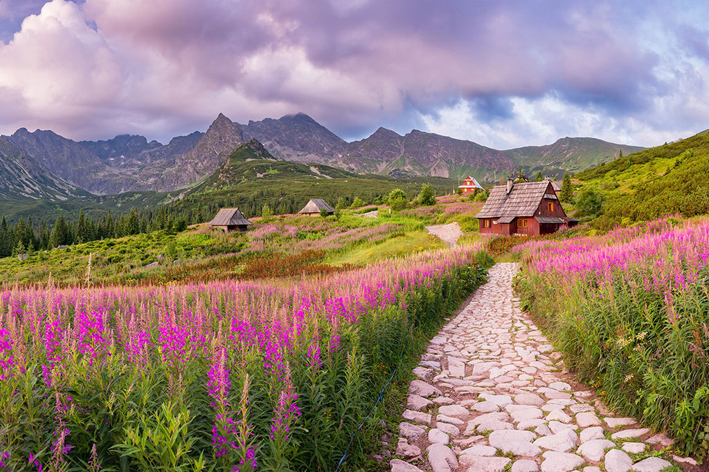
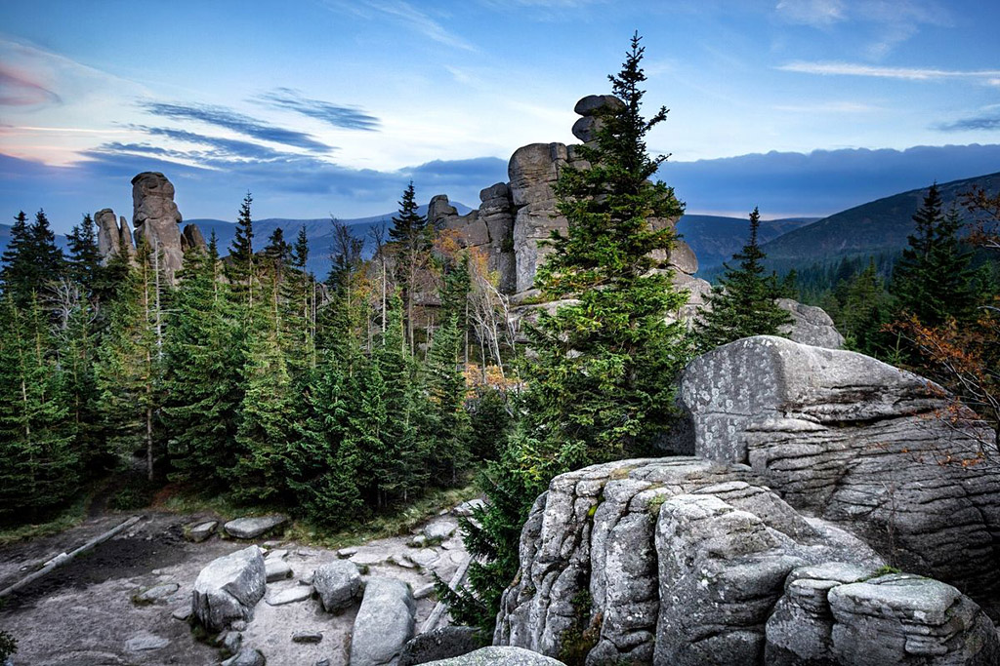
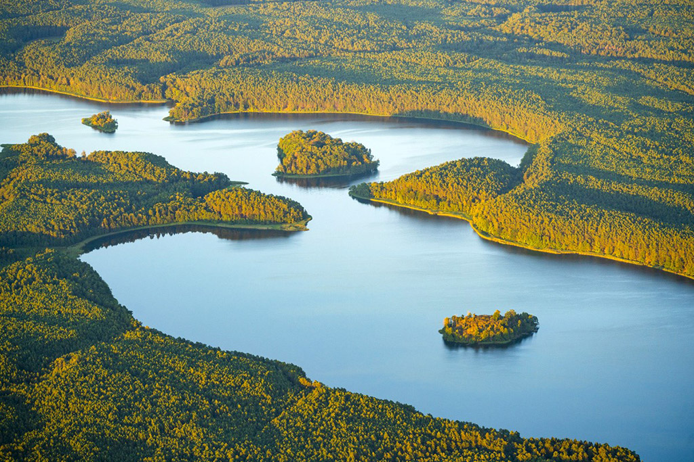
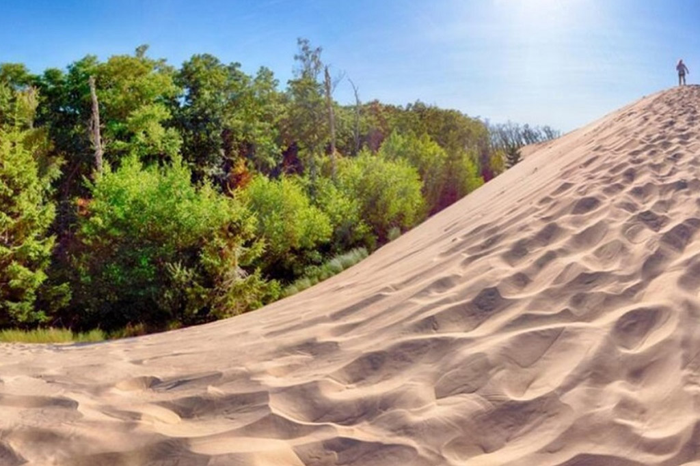
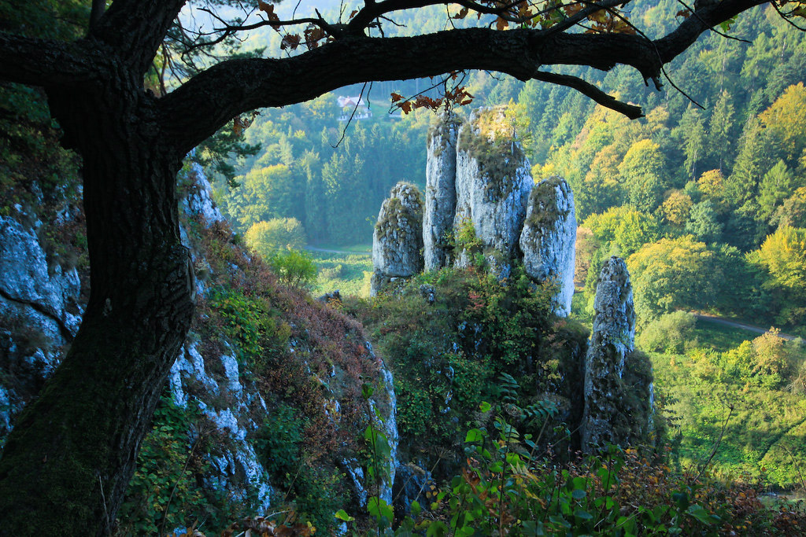
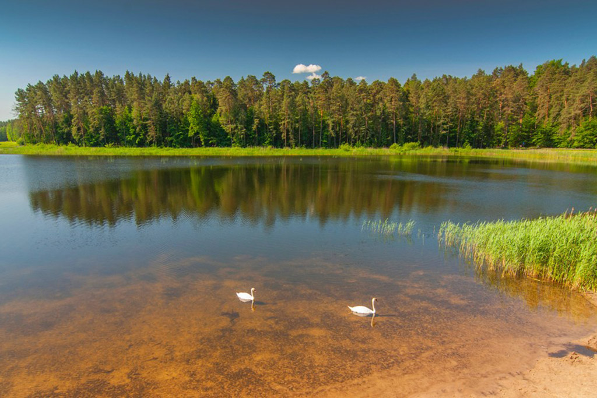
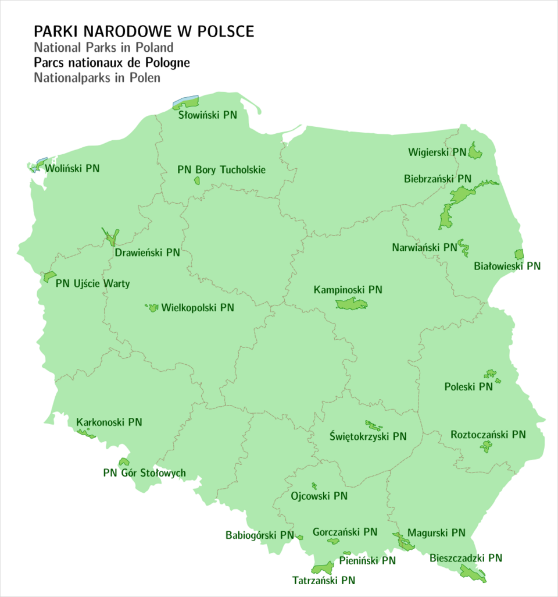

Podstawa prawna
Park narodowy – jedna z form ochrony przyrody w Polsce. Zgodnie z ustawą o ochronie przyrody z 2004 obejmuje obszar wyróżniający się szczególnymi wartościami przyrodniczymi, naukowymi, społecznymi, kulturowymi i edukacyjnymi, o powierzchni nie mniejszej niż 1000 ha, na którym ochronie podlega cała przyroda oraz walory krajobrazowe. Park narodowy tworzy się w celu zachowania różnorodności biologicznej, zasobów, tworów i składników przyrody nieożywionej i walorów krajobrazowych, przywrócenia właściwego stanu zasobów i składników przyrody oraz odtworzenia zniekształconych siedlisk przyrodniczych, siedlisk roślin, siedlisk zwierząt lub siedlisk grzybów.






Lista parków narodowych
W Polsce wyodrębniono 23 parki narodowe.

Lokalizacja Parków Narodowych
Kliknij w nazwę, aby dowiedzieć się więcej...
Kolumna 3
W tej kolumnie znajduje się lista parków narodowych w Polsce, a także mapa z zaznaczonymi lokalizacjami tych parków. Klikając w nazwę parku, można uzyskać więcej informacji na jego temat, w tym aktualną pogodę i prognozę na najbliższe dni.
...